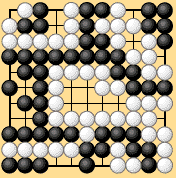
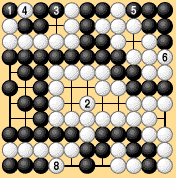
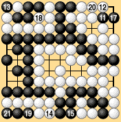
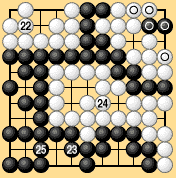

| 6.12 Shimada's Position |
|---|
| Dia. 6-17-1 is shown in Shimada's book on the mathematics of go. Under Shimada's proposed rules Black wins by four points. This position is extremely interesting: we shall try playing it out under territory rules I and II and see what we get. |
|  |
| Dia. 6-17-1 |
|---|
| Let's suppose that Dia. 6-17-1 has been reached after fifty moves by each side. Black and White now pass, establishing the preliminary end of the game. The rest of the moves under territory rules I are shown in Dias. 6-17-2 and 6-17-3. White 22 passes, giving up a stone. Black 23 passes without giving up a stone, by the rule of equal numbers of moves. Black has fifteen points of territory and has lost sixteen prisoners. White has twelve points of territory and has lost fourteen prisoners (including White 22). Black wins by one point. |
|  | |||
| Dia. 6-17-1 |
|
||
|---|---|---|---|
|  | |||
|
| If the game is finished according to territory rules II, the moves in Dia. 6-17-4 are needed to satisfy the definition of immortality. By territory rules II, the circled stones in the seki in the top right that were played after the preliminary end of the game are deducted from each side's score. Three points must be deducted from White's score and two points from Black's. Black wins by two points. |
|  | |
|
|
Territory rules II were created to avoid counting territory or one-sided neutral points in a seki, but they have here an artificial quality which I dislike. For those who have read Shimada's book, it might be added that his proposed rules are slightly doubtful in regard to the seki including three points without capturing discussed in section 6.7. Territory rules II give a more satisfactory result. |